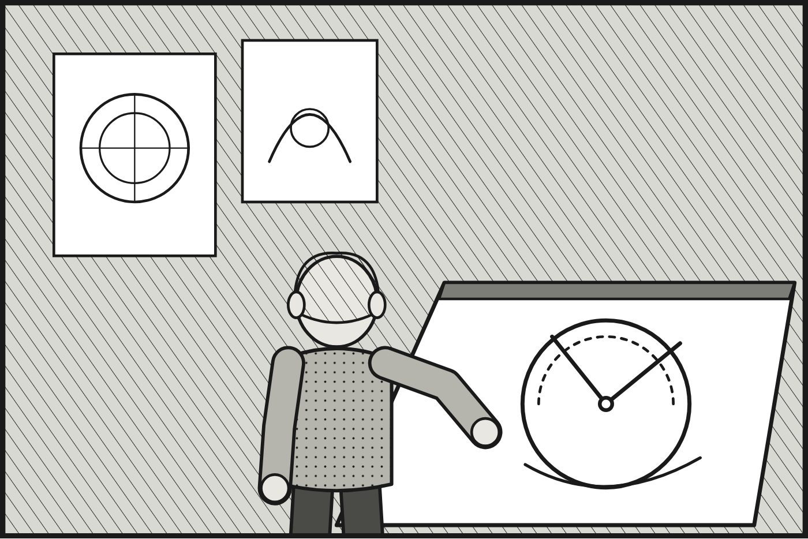

광고·마케팅 업계 뉴스 · 발행인 금로동 기자
서울올림픽의 얼굴을 그린 한국 그래픽 디자인 1세대

독자 여러분, 오늘은 1988 서울올림픽의 얼굴을 그린 그래픽 디자이너 양승춘을 소개합니다. 그는 서울올림픽 공식 엠블럼을 디자인한 인물로 알려져 있습니다. 엠블럼은 한국 전통 문양인 태극의 흐름을 바탕으로 세계가 한데 어울리는 모습을 담았습니다. 86 아시안게임과 88 서울올림픽은 한국 디자인이 처음 세계 무대에 선 순간으로 꼽히고, 그 시기의 기록은 디자인DB의 한국 디자인 아카이브에도 남아 있습니다. 그는 오랫동안 서울대에서 후배 디자이너들을 길러 냈고 2005년 정년퇴임을 맞았습니다. 국가 행사의 상징 하나가 수십 년 동안 한 나라의 인상을 대신한다는 사실은, 브랜드 마크와 캠페인 키 비주얼을 만드는 광고인에게도 오래 곱씹을 만한 이야기입니다.